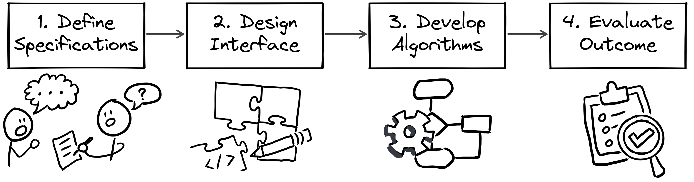
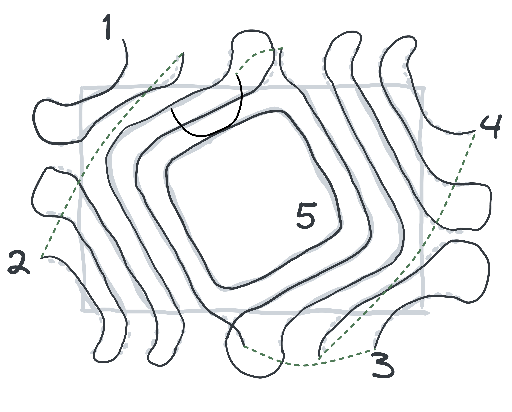
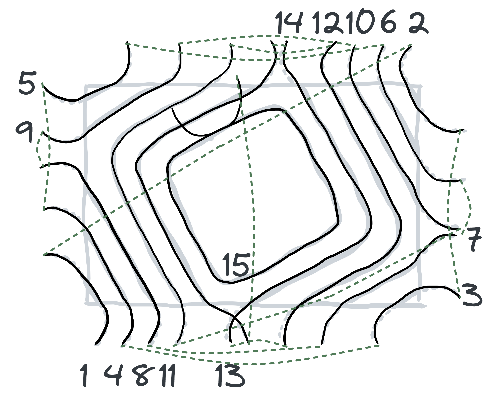

Contour Island Milling
Conversational CAD/CAM for Island Milling

Brief
{kind=link}
This project aimed to provide a built-in CAD/CAM (computer-aided design/computer-aided manufacturing) program in milling machine controllers. There are several fully featured CAD/CAM software on the market. However, since software could offer so much features, they not only demand long training time for users but also are very expensive. In this project, our customers wanted to manufacture an island feature on materials without any additional features. We made a built-in CAD/CAM in the controllers. Users didn’t need to use a computer to generate machine instructions. They could do the task by using a conversational window on the controller, simplifying the process of manufacturing.
My Role
Software Engineer
Skill
- C#
- G-code
- CIMCO
Timeline
2018/08 - 2018/09, 2 months
Team
- Po-Yen Ho
Workflow
- Define Specifications: After collecting all information and customer needs, I would define the specification and requirements of the project.
- Design Programming Interface: designing the software interface first helps collaborate with others.
- Develop Algorithms: Analyze and break down the problems. Then, find solutions to each small part.
- EEvaluate Outcome: Ensure the final program achieves its objectives.
Step 1: Define Specification
I collaborated with a product engineer to develop the product. At the beginning of the development, I asked the customers and discussed with the co-worker to know the background and context of the project so that I could know the objective of the project. We decided to distribute our workload. He was responsible for the human interface, and I took the algorithm part.
Workflow
By analyzing each step of the workflow, I got an overview of the project. In the workflow, users interacted with the human-machine interface (HMI) on the controller to set the processing parameter. The controller then generated tool paths and converted them to machine instruction files. Finally, the users started the machining and got the desired piece.

To collaborate with the product engineer, I provided an algorithm for generating tool paths. The next step was to know what was the input and the output.
{kind=link}
Analyze Input Parameters
Users input the parameters to describe the shape and the processing parameters:
- Raw material descriptions: type (e.g. rectangle, circle), position, etc.
- Island shape description parameters: type (e.g. rectangle, circle, polygon), width, length, diameter, corner radius, etc.
- Tool path parameters: cutting direction (i.e. clockwise/counter-clockwise), axial depth per cut, axial/radial thickness, etc.
{kind=link}
{kind=link}
{kind=link}
Analyze Output Requirements
Examining the customer desired tool paths, I organized the following rules:
- The tool paths have two types: closed loop and open loop.
- The sequence of tool paths should be optimized for efficiency. Comparing the two planning methods: “from outside to inside” and “the same corner first”, processing the same corner first can shorten the total travel distance and increase productivity.
- Other parameters should set default values, e.g. processing order of corners, lead lines, etc.
Same Corner First
{kind=link}
From outside to inside
{kind=link}
Step 2: Define Interface
Before developing the algorithms, I designed the programming interface and provided the sample code for the product engineer.
- It was helpful to collaborate. Since the product engineer knew what the algorithm interfaces were, he could design and implement the user interface simultaneously.
- I could write the test code in advance. The test codes helped me evaluate my work in the end.
{kind=link}
{kind=link}
Step 3: Develop algorithms
I broke down the algorithm into smaller parts and found solutions for each piece. It could be separated into three parts: geometry offset, geometry trimming, and sorting the segment. Using a similar process, I defined each part's inputs and outputs. Then, I researched how to solve each part individually. For example, geometry offset was a laborious problem to be solved generally. Fortunately, I found an open-source solution and integratedit into our product since I didn't want to reinvent the wheel. Using established stable libraries accelerated the development process. Moreover, I devised a method to sort the path segments in the same corner first strategy. In the end, I assembled each part and completed the task.
{kind=link}
Clip Geometry
{kind=link}
Sort Path Segments
{kind=link}
Step 4: Evaluate Outcome
Since I designed the test cases in advance, I could use them to examine the outcome at early stages. Later, the co-worker further integrated my library into his code and demonstrated it to customers.
Reflection
Beyond a comprehensive solution, a focused and easy solution could also bring high satisfaction to customers. Since it was customized for the client, the project eliminated additional functions, which meant it reduced noise for the client. The client would make lesser decisions to complete the task. Therefore, the customer felt satisfied with the limited interactions to process the workpiece.
Defining a clear software interface could benefit the later collaboration with other developers. Providing sample code is helpful for others to use. My colleague said he could conveniently use the sample code to develop his part. He felt he could work efficiently. Also, since I had written thorough testing cases, he was confident to implement my code into the final project.